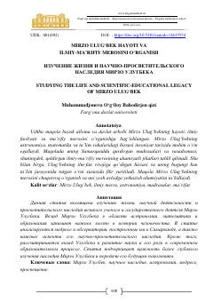

MUMirzo Ulug‘bekning hayoti, ilmiy faoliyati va ma’rifiy merosiga bag‘ishlangan ilmiy maqola.
Ushbu maqola buyuk alloma va davlat arbobi Mirzo Ulug‘bekning hayoti, ilmiy faoliyati hamda uning astronomiya va matematika sohalaridagi boy merosini tahlil qiladi. Muallif Ulug‘bekning Samarqanddagi ilmiy maktabi, rasadxonasi va uning bugungi ta’lim jarayonidagi ahamiyatini yoritib beradi.